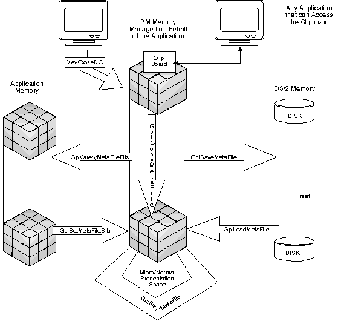

The OS/2 operating system provides a set of functions that allow you to:
How these functions are used to create and manipulate metafiles in relationship to applications and components of the operating system is illustrated in the following figure.
Metafile Functions